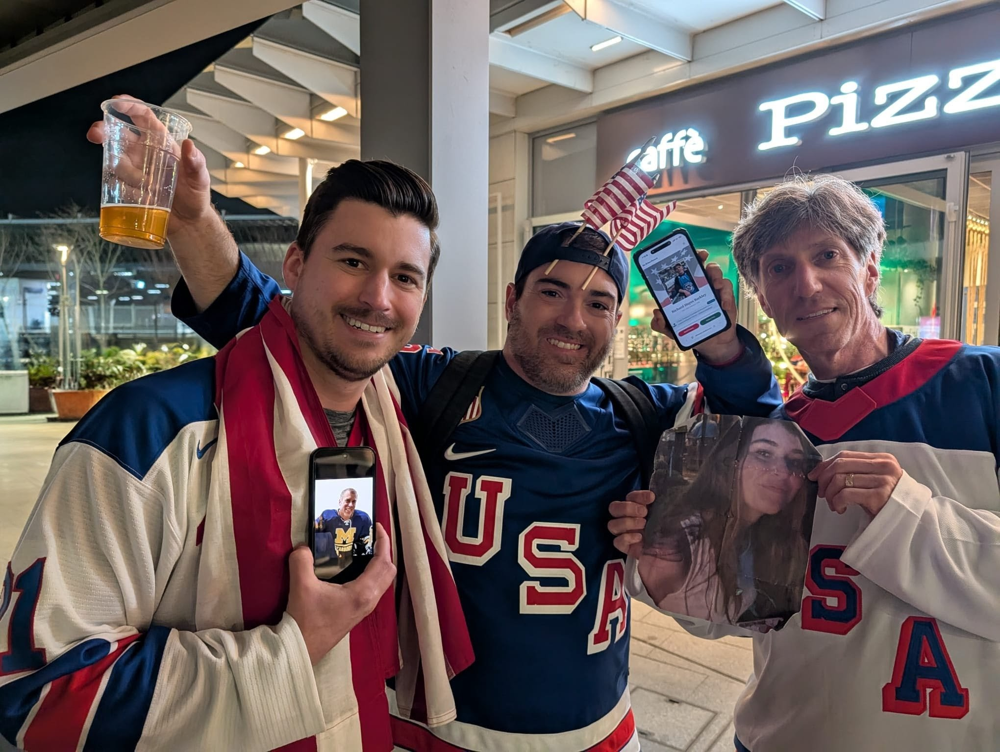

Men’s Qualification
Upon first arriving in Italy I met up with fellow solo traveler, Connor Mohr, to get the lay of the land and make plans to watch some hockey together. We ended up first attending the men’s qualification round between Sweden and Latvia on Tuesday night to scout out the competition Team USA was to face the following night and also get my first live glimpse of Olympic hockey. I was in awe from the start. This tournament was going to be electric!
We were able to squeeze in a late nightcap after the game meeting up with fellow Chicago hockey player and neighbor Jack Seney along with his fiance, Annie. Over a drink, they told me the location of the USA “Winter House”, which was a swanky hotel and bar that became the hospitality headquarters for Team USA in Milan. I promptly saved the location to my Google Maps and forgot all about it, not knowing it would become key intel later on in my trip.
 Scouting the competition: Sweden vs. Latvia.
Scouting the competition: Sweden vs. Latvia.
 Nightcap with Jack.
Nightcap with Jack.
Men’s Quarterfinal
Connor and I had seats together for the 9:15pm quarterfinal matchup of USA vs. Sweden. Watching Team USA come onto the ice in glorious blue against Sweden’s iconic Tre Kroner yellow jersey, I couldn’t help but think of Herb Brooks (ok, Kurt Russell) angrily yelling “you’re playing SWEDEN…IN THE OLYMPICS!” in Miracle. This was my first ever glimpse of the USA hockey team live in person - something I have quite literally been dreaming about for as long as I can remember. I was beyond pumped up.
 USA vs. Sweden.
USA vs. Sweden.
 The summery Corona cups.
The summery Corona cups.
After a scoreless first period, we took to the concourse. Shockingly, the only beer served at the Olympic events was the summery (and overrated) Corona, but at least they came in cool cups.
Naturally, I was wearing my favorite hometown player’s jersey in Milan. A Michigan Wolverine who went on to become captain of the Detroit Red Wings and key player & leader for Team USA, Dylan Larkin. As we got through the beer line after that first intermission, Connor pointed out a big group of people also wearing #21 jerseys and so I absolutely had to go say hello and introduce myself. It turned out to be Kevin Larkin (his dad), Colin Larkin (his brother), and a whole crew of family and friends that had traveled to Milan. We had some fun chatting and they couldn’t have been nicer people who I would end up seeing at nearly every intermission of each USA men’s game through the rest of the tournament. I’m sure they were meeting a ton of people so I think amidst all of that Kevin’s dad thought I was somehow connected to the Clayton Keller group. At first I tried to explain that I’m just a fan, but eventually I thought it best to just roll with it, an attitude that would continue to pay dividends for me on this trip.
 The Larkin Family crew.
The Larkin Family crew.
 Rolling with the "Keller Group."
Rolling with the "Keller Group."
Guess who scored the first goal of the game? It had to be Dylan Larkin. In fact, as the teams got set for that offensive zone draw in the second period I actually turned to Connor and said “Larkin faceoff win leads to a goal, right here” and wouldn’t you believe that’s exactly how it turned out. Sure, you could say I make a lot of predictions and even a blind squirrel finds a nut, but that wasn’t the case in the stadium that night. Connor will vouch for me on this one.
We got to experience our first really nervous moments when Sweden tied the game up late in the third period with their tendy pulled to send it to overtime. Here we go. Our tournament could be over before even getting to the medal round. It was epic from a pure hockey standpoint, but horrifying for a die-hard USA fan whose tournament was just getting started. I was certainly nervous getting my first taste of 3-on-3 Olympic overtime. I honestly don’t believe I had ever witnessed an OT game winner in a win-or-go-home hockey situation. Sure, the opportunity doesn’t come around every day but when you consider that I’ve probably attended at least 5 of these situations between following Michigan hockey in the tournament and a Red Wings game 7 playoff OT loss, I wouldn’t blame you for believing I’m cursed as some of my buddies do. Not in this game, not tonight. Thankfully, the boys got it done and another former Wolverine, Quinn Hughes buried the game winner. Luck or destiny may have been turning our way, and I allowed myself to dream about the games ahead. Let’s fucking go boys!
Women’s Gold Medal
 The quest for Gold begins.
The quest for Gold begins.
After having sweated out the late overtime win by the men the prior night, I took my time getting up and moving. This was the day of the women’s gold medal game, and as expected the matchup was USA against Canada. These were the very first tickets my dad and I had purchased more than a year prior to the event, I remember talking with him when planning the trip about the potential of seeing USA vs. Canada in a gold medal game and how excited we were even thinking about that possibility. The day had finally arrived and I was sad that my dad wasn’t there to take in the moment with me.
Still, I was quite excited for the game and happy to have a fellow fan to put my dad’s ticket to good use in Connor. We decided to meet up for pregame beers around 1pm, and landed on the canal district, or Navigli, as a good spot. As we walked along the canal it was striking how many more Canadian fans were out and about than Americans. The first beer-focused place we could find open was the Navigli Craft Beer bar, which turned out to be a great spot to start. After a few beers and friendly chatter with some fellow Americans, we moved to the next location. Connor knew the bar the Canadians had taken over - the Blues Canal - and we decided to pop in for a little fun. It was pretty quiet. Most of the beer taps had run dry from the night before so the restock was in full gear, but we managed to get a liter of the Moretti each and posted up by the bar. We heard a couple playful comments, but no strong chirps. A reporter approached us asking about our audacity to show up the Canadian bar decked out in full USA gear, and we had a quick recorded conversation and took a photo. She turned out to be Robyn Doolittle of the Globe & Mail who had broken open some of the news of the late Rob Ford’s personal scandals as mayor in Toronto. We told her we were confident and we even thought the Canadian fans were nervous since the USA women had been so dominant. We were ready to go. We followed beers up by tucking into a small empty restaurant where we shared some pregame pasta (as if we were playing in the game), then made our way to the game.
 Moments before puck drop. The energy was massive.
Moments before puck drop. The energy was massive.
The game was intense. Canada took the lead with a strong individual effort on a short-handed goal and backed it up with incredible defending making USA look like a shell of its usual self. Frustration started to mount as uncharacteristically we just couldn’t get anything going. It was starting to slip away, and things got really nerve wracking as the clock wound down in the third period and we pulled our tendy. Then, the most decorated woman in USA hockey history, Hilary Knight, tipped in a shot in front of the net to tie the game with 2 minutes left and we went crazy. What a relief, we were staying alive and momentum was on our side. The game was on to OT, for Olympic gold. I had chills.
Both teams looked extremely nervous too as they got out of the gate for 3-on-3 overtime. The first few minutes didn’t have a great flow with mishandled and sloppy play all around. There was a near breakaway coming down to our end right in front of us where we thought it might be over, but a great backcheck saved the day. Finally a break occurred with a long outlet pass during a bad change and you could feel for a moment the entire crowd, on both sides, holding their breath. That’s when American hero Megan Keller, from my neighborhood in Farmington Hills, MI, pulled off the “Star-Spangled Dangle” golden goal to bring home a gold medal in absolutely epic fashion. We went nuts and it was pandemonium in the rink. Connor and I were in disbelief at what we had just seen and the fact that our hometown hero had pulled that off. Absolutely unreal. We watched the anthems and celebrations until the very last player left the ice. When the anthem played I was a bit overcome by emotion and couldn’t help but think about my dad. He sure would’ve loved the hometown connection on the OT GWG and I could almost hear him saying “epic”. I felt so thankful to be able to witness such an incredible moment.


Leaving the rink late, I convinced Connor to go for post game beers…even though it was in the complete wrong direction for him to get back to his hotel, we had just seen a GOLD MEDAL after all! We headed to a new spot called Il Beerla. Immediately upon walking in I’m hugged by a young guy who “misses Americans”. He turns out to be a rich kid of Russian heritage from Maine who is both studying abroad and working as a jeweler in Milan, just another in a line of interesting people that I’d encounter over the course of this trip. We also met the owner of the bar who was very kind, and of course put up some Mac Brewing stickers. It was going to take a while to come down from the high after that game - what a night!
Men’s Semifinal
On the morning of the semifinals, I found a quiet moment to myself, sitting under the ancient pillars of the Porta Ticinese Medievale with a coffee in hand. As I was watching the city wake up, a flash of red, white, and blue caught my eye, a USA jersey. I struck up a conversation with the person wearing it, a guy named Davidson. It turned out he was living in California but was originally from the Detroit area, so we hit it off immediately over the hometown connection. I invited him to join forces for the day, and once I linked back up with Connor the three of us set out on a mission for a proper Italian lunch. We ended up finding a spot that served arguably the best Cacio e Pepe in all of Milan. We spent the early afternoon lingering over incredible pasta and wine, the kind of meal that makes you forget you have somewhere to be, until the pre-game energy finally pulled us toward the rink.
 Pregame with Viktor and the Swedes.
Pregame with Viktor and the Swedes.
We took the train out toward the rink and decided to squeeze in some pregame beers near the shuttle pickup point. That’s where we ran into a group of Swedes on a weekend trip, led by a guy named Viktor. They were a riot even though their team had been eliminated - exactly the kind of fun, boisterous group you want to grab a drink with before a big game. After a few rounds and plenty of laughs with them, we headed into the arena for the doubleheader. The first matchup was Canada against Finland. For a while, the Finns played with enough heart to make us think an upset was brewing, but the Canadians eventually proved to be too deep and disciplined. Fortunately, the main event was much easier on my heart than the women’s final had been. Team USA completely overmatched Slovakia, putting on a dominant performance that gave us a rare, stress-free win to punch our ticket forward.
As the clock was winding down in the semifinal, I had already decided I was going to attend the gold medal game no matter how expensive it was going to be. Thankfully, I had some intel - shoutout to John back home for sending me a link, even if I didn’t trust it at the time - on a resale app that actually resulted in the tickets actually being transferred to the Olympic app after having seen Davidson successfully use it at the bar earlier in the day. I found a “partially obstructed” lower bowl seat, which I had to check out for myself. As it turns out, it was only a couple sections over from where I sat and directly next to the USA women’s team who were having fun watching the men and still celebrating their own gold. I watched them take a group picture with their superfan Jason Kelce, then gave captain Hilary Knight a congratulatory fist bump and “hell yeah!” as I walked by. The seat wasn’t going to be obstructed at all, it would be perfect. With that the semis were wrapped up and I was all set for Sunday so it was time to go.


By the time we got back to the city, the group splintered off. Connor and Davidson headed their separate ways, but I wasn’t quite ready to call it a night, so I ducked into a spot near my Airbnb for a nightcap - the Tutti Fritti. To my total surprise, standing right there outside the beer window was the same group of Swedes, with Viktor leading the charge. We picked up right where we left off, closing down the bar together. Just as the lights were coming up, we met two young guys from Poland and a local Italian girl, and the whole mismatched group migrated to yet another bar. I eventually had to call it a night before I let them talk me into hitting a club, finally heading home in the early hours.
The universe clearly wasn't done with that connection, though; in a bizarre twist of fate, I ran into Viktor and the Swedes one last time the Monday after the Olympics ended. We crossed paths at a random spot in the city as they were dragging their bags toward the train station to start their trek home. We said our final goodbyes, wondering if our paths would ever cross at a rink in the future. And as if the trip couldn't get more "hockey," mere moments after leaving the Swedes, I spotted Mike Eruzione just casually strolling through town - but more to come on him later!
Men’s Gold Medal
 History begins.
History begins.
For the championship game, the pregame ritual shifted. Connor had already headed home, so Davidson and I took the train out toward the rink, settling in for some high-stakes beers at the shuttle point. We were many hours early, but we were already seriously feeling the nerves. This was the matchup we’ve been waiting for since 2010 and we wanted redemption. The energy started to build as the crowd grew around the bars, which led to completing chants of “USA!” and “Canada!” Beers were flowing. It was both a tense and exciting buildup to the game. I took a second to think about the magnitude of the game and how this was the absolute top bucket list sporting event I could dream of. Pinch me. Eventually, we had to make our way to the rink. Inside the concourse, I spotted Dylan Larkin’s family again. At every intermission, I made a point to find his brother Colin for a quick fist-bump for good luck.
To be honest, the game itself is a blur of adrenaline and anxiety. I had an incredible lower-bowl seat for by far the fastest game of hockey that I’ve ever seen, and probably the fastest that’s ever been played. And I was a nervous wreck the entire time. Right in front of me at our end, Canada had chance after chance, and I watched Connor Hellebuyck put on one of the all time greatest goaltending performances. The paddle save on Toews; the wide open net missed by MacKinnon; it was all happening directly in front of me and I could hardly believe it. The highs, lows, and momentum swings in the game were absolutely insane. One minute we’re desperately killing a 5-on-3 penalty against the best power play group ever assembled, the next we’ve got a 4-minute double minor power play in the dying minutes with a chance to win it, and just like that we give the penalty back for another terrifying penalty kill at the most critical point in the game.
When the game went to overtime, I couldn't sit still. I was pacing the concourse, of course found Colin Larkin for good luck, but otherwise didn’t really know what to do with myself. I made sure to get back to my seat with plenty of time to spare and watched the zambonis for what felt like an eternity. Finally, it was time. Sudden death 3-on-3 overtime, USA vs. Canada for Olympic Gold. It literally does not get bigger than this in the hockey world. I knew that no matter what happened I was about to witness history, but prayed to the hockey gods that it would be the good kind.
 No time for a nervous person.
No time for a nervous person.
My mind was a complete mess between positive and negative, rational and irrational thoughts. McDavid + MacKinnon + Makar in 3-on-3 overtime? We’re completely screwed. They can’t stay on the ice for the entire overtime though, can they? Plus each of their guys is going to try to be the hero individually. Canada isn’t that deep, they’re only going to trust two lines in this thing. USA is going to roll deeper than that with three full lines. Please, just survive and hope for a lucky bounce to go our way.
Then it all happened, and it sure happened fast. We rolled into our third line just like I thought we might - Larkin’s turn - and of course you know who was back out there for Canada. McDavid was flying through the neutral zone and came down with a one-on-one chance, getting wide around our guy but without a lot of real estate to work with. Again, Helle stood strong in net and I noticed him sweep the puck back behind the net out of danger and in stride for our skaters to keep moving with speed. This could become something. Hughes feeds to Werenski who passes it to no one in a horrifying 50/50 moment, but it goes our way and we’re out of the zone on the move. When Werenski found him open in front and Jack Hughes buried the Golden Goal, it was complete bedlam. Holy shit. It was the best celebratory moment in sports that I’ve ever seen, or could ever imagine seeing.
 The flag hanging on the glass as history unfolded.
The flag hanging on the glass as history unfolded.
When the pandemonium died down for a second, I struggled to process what I had just seen. USA beating Canada in overtime for Olympic Gold, for a second time in a week - it still sounds insane, even knowing exactly what happened. I thought about all four players on the ice being from Michigan - Hellebuyck, Hughes, Larkin, Werekenski - and how great that is for our game and our home state. Dad would’ve absolutely loved that part.
I ran down to the front row as the celebration erupted and attempted to throw my flag onto the ice to be used in the celebration. It got snagged on the glass, nudged by a photographer, and hung there as a backdrop for the chaos. As the anthem played, the weight of it hit me again. I teared up and kissed my dad’s pins on my USA jersey. It was, without question, the greatest sports moment of my life.
 Gold #2 in Milan!
Gold #2 in Milan!
I eventually found Davidson - I always go "dark" and put my phone away for big games like that - and we were both in a total state of shock. We ran into the Larkins again, and I’ll never forget Dylan’s dad, Kevin, screaming, "Let’s go, I need a fucking beer!" as they waited for the players to come out to the green room. We stood around for a bit waiting but eventually took the cue and finally left the rink. We hopped the shuttle back to the train stop area where there was a bar nearby to start our own celebration - beers had never tasted so good! That's where we ran into a guy named Shawn from Colorado along with his friend, and then a country singer from Pittsburgh named Will. Will bought another round of twenty beers, and our group swelled to include a United pilot and his wife. We were now a rag-tag collection of seven fans bonded by the game. We shared some heavy, beautiful moments there; Will and I had both lost our fathers who shared a hockey bond with us, and Shawn was carrying a photo of his niece who had passed whose favorite player was the golden-goal hero himself, Jack Hughes.

Will and I with photos of our fathers and Shawn’s niece.At the same time, both my mom and my dad’s buddy Tony were sending celebratory messages and pictures showing how they were including the memory of my dad in their celebrations back home.


As the night progressed, I remembered my key intel from Jack at the start of the trip. I told the group I knew where the "Winter House" was, and therefore where the Team USA after-party would be happening. Will didn't hesitate: "You get us there, I'll get us in." We decided to go for it and navigated the train back to town, then the tram back toward Navigli. We walked in a line, but got a bit spread out as we approached the hotel. Will went to the door first and I didn’t hear the interaction, but as I walked up second the greeter looked at me and asked, "Are you also with Quinn?" I didn't blink: "You bet I am."
Suddenly, we were inside the Team USA gold medal after party. Un-fucking-believable. The first person I saw was Quinn Hughes, then the legend himself, Mike Eruzione. Are you kidding me? I took a selfie with both of them, as well as Brady Tkachuk and his gold medal. When Colin Larkin spotted me, he just laughed, "How'd this guy get in?" I tried to stay low-key, just soaking it in without intruding on the moment that was most meant for the team and their families. I watched the Tkachuks and McAvoy celebrating, saw a very shy Auston Matthews, and a very tall Tage Thompson. I even chatted with Jack Hughes for a minute since we’ve actually got a mutual connection - when I mentioned his video guy back in Jersey was my old roommate, Greenie, he was incredibly cool and saying “oh you must be a UMich guy." I was struck by how young most of the team looked - especially Brock Faber - in person and in that setting. They were having the time of their lives, and to be honest so was I.


I spent the rest of the night nursing Michelobs and sparkling waters by the bar and watching the surreal scenes unfold around me - like Eichel and McAvoy accidentally falling into me during a loving bro moment as I was taking a selfie. Even when the pilot from our group almost got us all tossed for being a bit too bold - patting a USA exec on the head as he walked by, I guess he’s a bit touchy feely when drunk! - I just drifted to the other side of the room and kept taking it all in. As a goalie, I of course would’ve loved to take a picture and give kudos to Hellebuyck for his absolutely heroic performance, but as I hung nearby he was deep in a conversation about the best fishing spots in Southeast Michigan. I chuckled at that, but it was his moment to enjoy however he wanted and I certainly wasn’t going to interrupt that.
It was the perfect, unbelievable capstone to the trip. Double gold for USA hockey is something I’ve dreamt about seeing on tv since I was about 7 years old. I remember being a kid watching with my dad as the women won it in Nagano in 1998, then both the men and women falling short against Canada in 2002, and of course the heartbreak of Crosby’s golden goal in 2010. How sweet it is to get redemption in a way that couldn’t have been scripted any better, and how incredible to be there in person. I can forever say that I was at the party with Team USA after the first men’s gold of my lifetime, the first since the famous Miracle On Ice, and the first with NHL players.
I know dad would've been loving every minute.